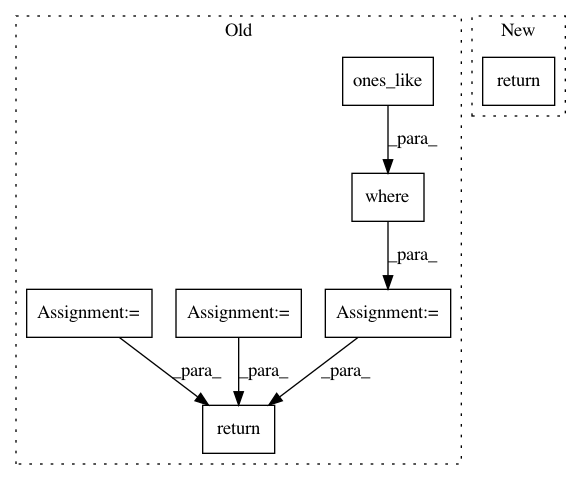

d3f1a5ad4507e88b016e0a829f4ba142294c16e6,tensorflow_ranking/python/losses.py,_SoftmaxLoss,_precompute,#_SoftmaxLoss#Any#Any#Any#,871
Before Change
label_sum = tf.reduce_sum(input_tensor=labels, axis=1, keepdims=True)
// Padding for rows with label_sum = 0.
nonzero_mask = tf.greater(tf.reshape(label_sum, [-1]), 0.0)
padded_labels = tf.compat.v1.where(nonzero_mask, labels,
_EPSILON * tf.ones_like(labels))
padded_label_sum = tf.reduce_sum(
input_tensor=padded_labels, axis=1, keepdims=True)
labels_for_softmax = padded_labels / padded_label_sum
logits_for_softmax = logits
// Padded labels have 0 weights in label_sum.
weights_for_softmax = tf.reshape(label_sum, [-1])
return labels_for_softmax, logits_for_softmax, weights_for_softmax
def compute_unreduced_loss(self, labels, logits, weights):
See `_RankingLoss`.
labels, logits, weights = self._precompute(labels, logits, weights)
After Change
labels = self._lambda_weight.individual_weights(labels, ranks)
if weights is not None:
labels *= weights
return labels, logits
def compute_unreduced_loss(self, labels, logits):
See `_RankingLoss`.
label_sum = tf.reduce_sum(input_tensor=labels, axis=1, keepdims=True)
In pattern: SUPERPATTERN
Frequency: 3
Non-data size: 7
Instances
Project Name: tensorflow/ranking
Commit Name: d3f1a5ad4507e88b016e0a829f4ba142294c16e6
Time: 2019-11-12
Author: xuanhui@google.com
File Name: tensorflow_ranking/python/losses.py
Class Name: _SoftmaxLoss
Method Name: _precompute
Project Name: hls-fpga-machine-learning/hls4ml
Commit Name: 8c4ca59b578a5e4bc7ef82c69722247307280160
Time: 2020-11-18
Author: sioni.summers10@imperial.ac.uk
File Name: hls4ml/converters/keras/qkeras.py
Class Name: QKerasPO2Quantizer
Method Name: __call__
Project Name: hls-fpga-machine-learning/hls4ml
Commit Name: 8c4ca59b578a5e4bc7ef82c69722247307280160
Time: 2020-11-18
Author: sioni.summers10@imperial.ac.uk
File Name: hls4ml/model/optimizer/passes/qkeras.py
Class Name: QKerasPO2Quantizer
Method Name: __call__